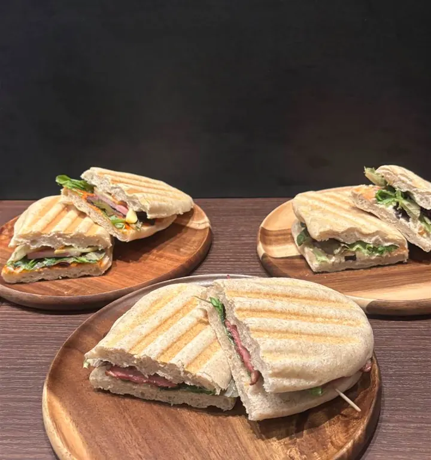
CAFE TIME
11:00–16:00（L.O. 15:30）
向ヶ丘遊園駅 徒歩3分Cafe&Baru Enka 煙霞
焼きたてのパニーニとハンドドリップコーヒー。
夜は自家製の燻製料理とお酒をどうぞ。
11:00–16:00 / 18:00–23:00（水曜定休）
お電話でも 044-819-8004 最新のお知らせ お知らせを読み込んでいます… 一覧へCAFE & BARU
全12席の小さなお店です。お昼はゆっくりランチとコーヒーを、夜は燻製をつまみにお酒を。

11:00–16:00（L.O. 15:30）
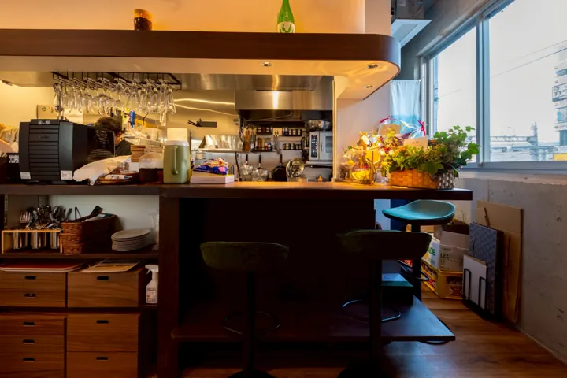
18:00–23:00（料理 L.O. 22:00）
パニーニはテイクアウトもできます。11:00〜15:30
NEWS
お知らせを読み込んでいます…
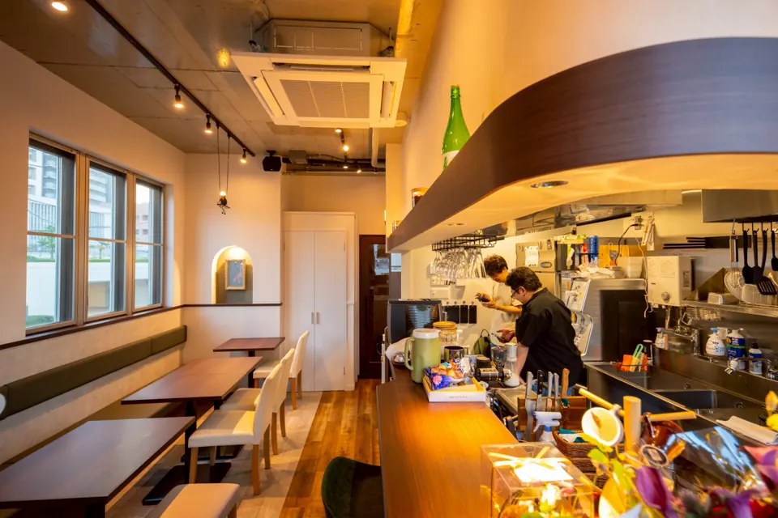
OUR WAY
店名の「煙霞（えんか）」は、立ちのぼる煙とかすみのこと。
自家製の燻製チーズやベーコンを、パニーニにも夜のおつまみにも。
ご注文をいただいてから焼き上げます。ハーフサイズもあります。
豆の個性に合わせて、一杯ずつ丁寧に淹れています。
GALLERY
店内の雰囲気とメニューの写真です。横にスワイプして見られます。
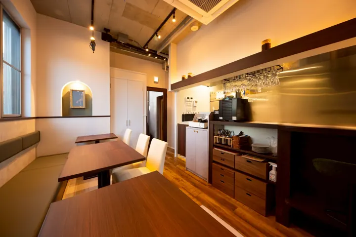
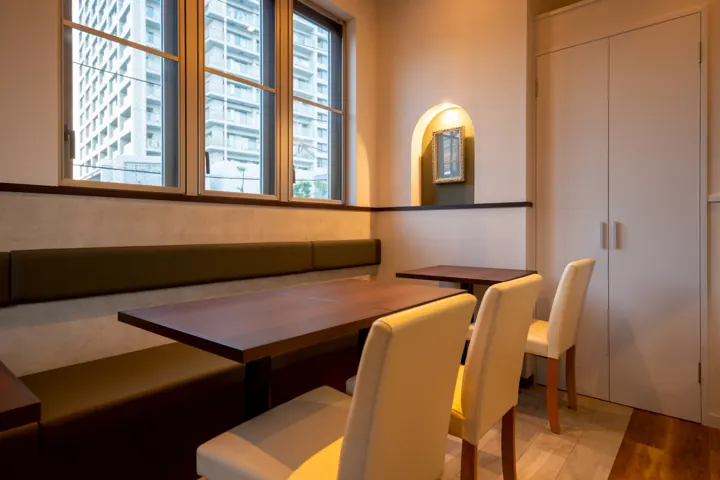
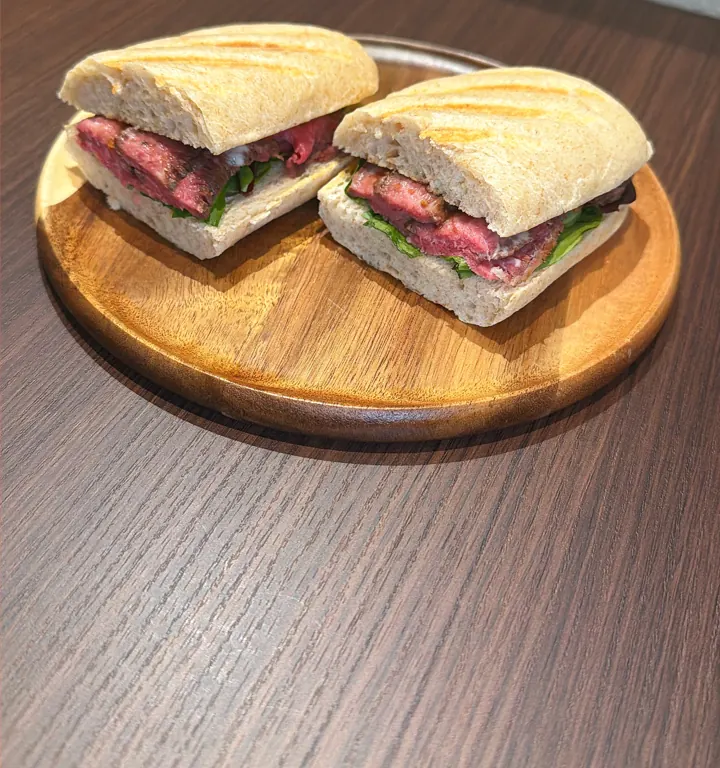
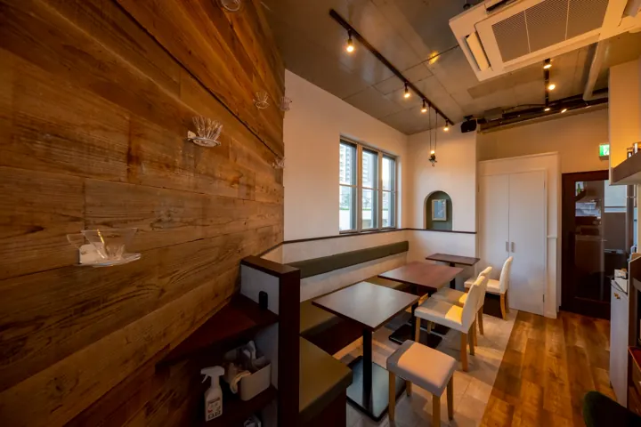
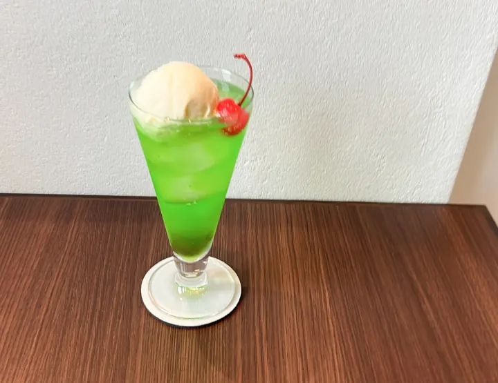
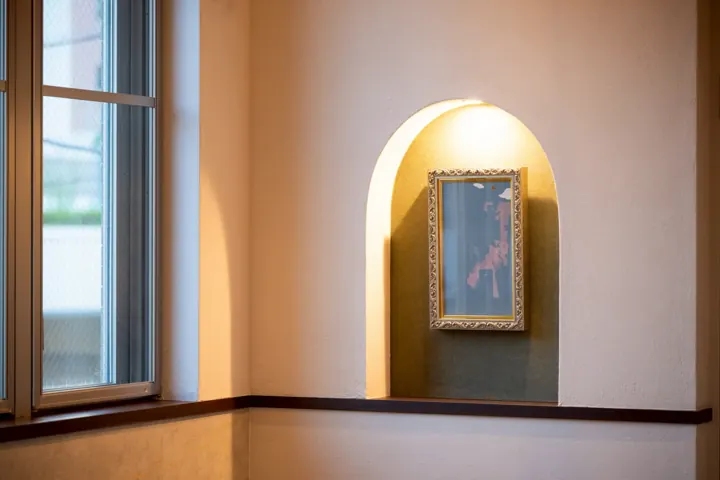
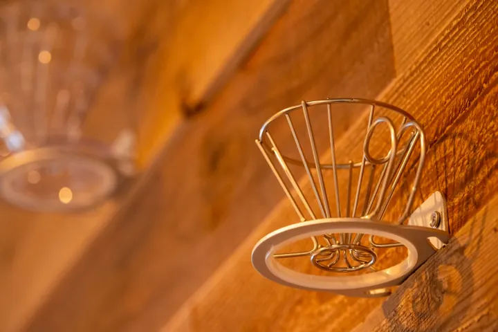
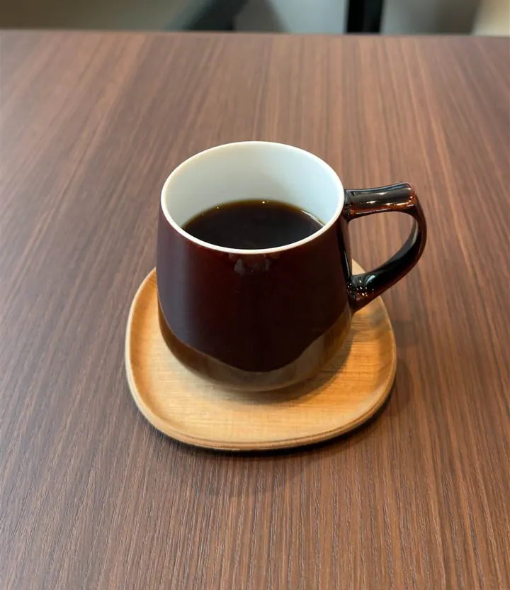
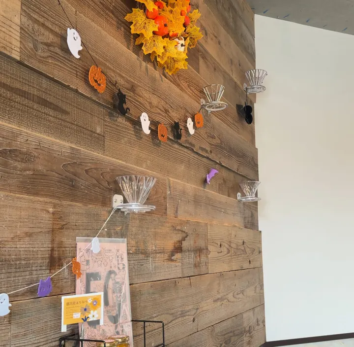
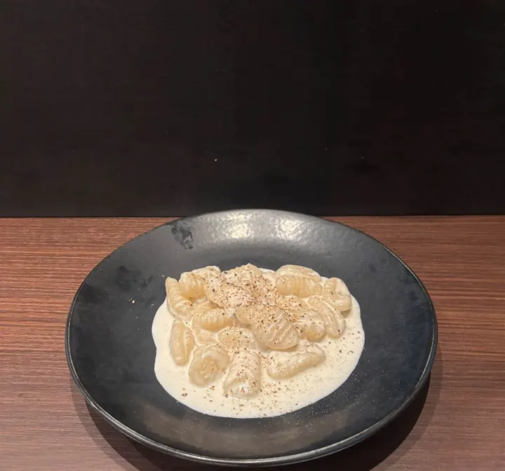
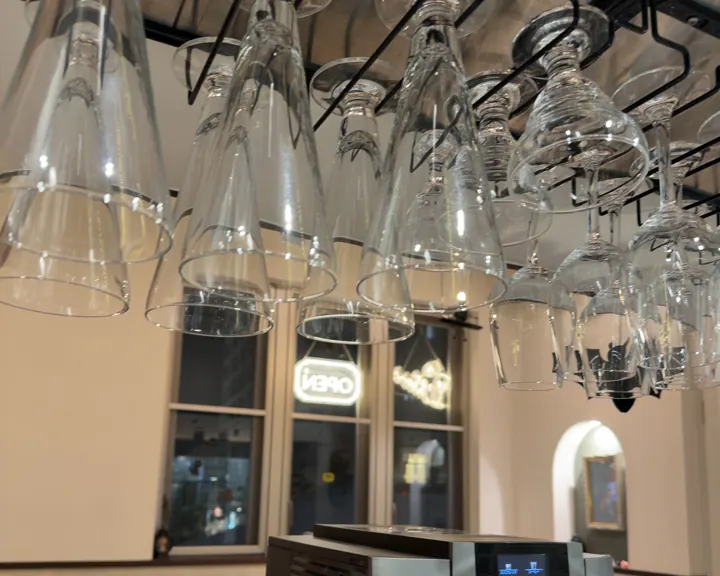
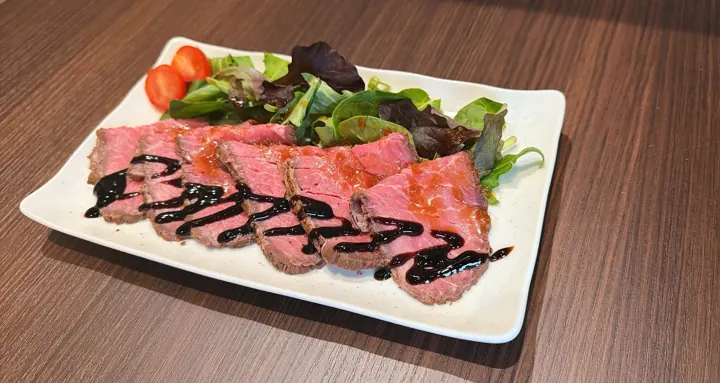
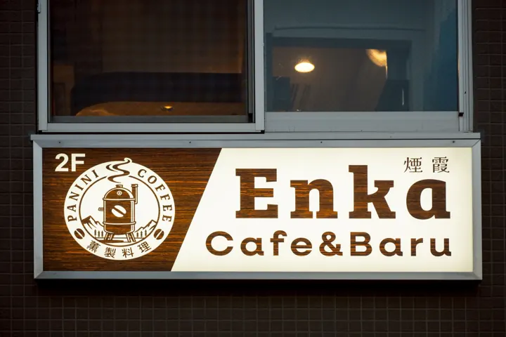
ACCESS
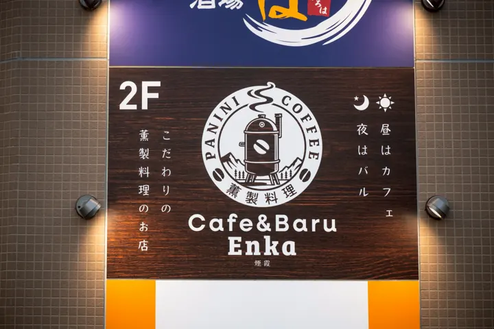
ビル2階のお店です。入口のこの看板が目印です。
RESERVATION
少人数の貸切やイベントのご相談もお気軽にどうぞ。
お電話は営業時間内（11:00–16:00 / 18:00–23:00）にお願いします。